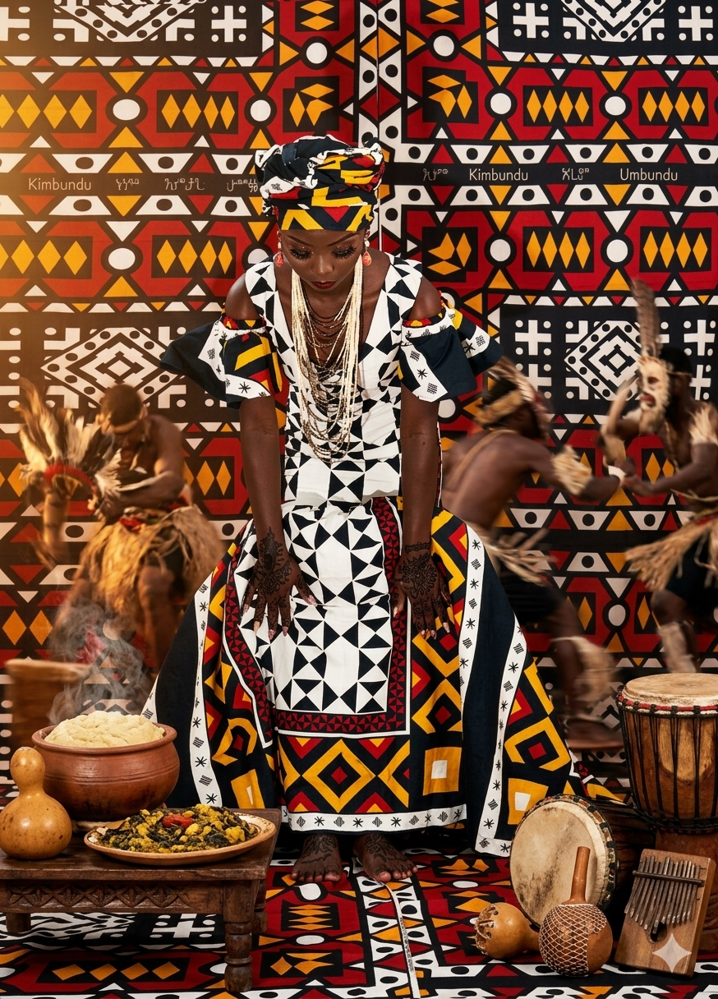
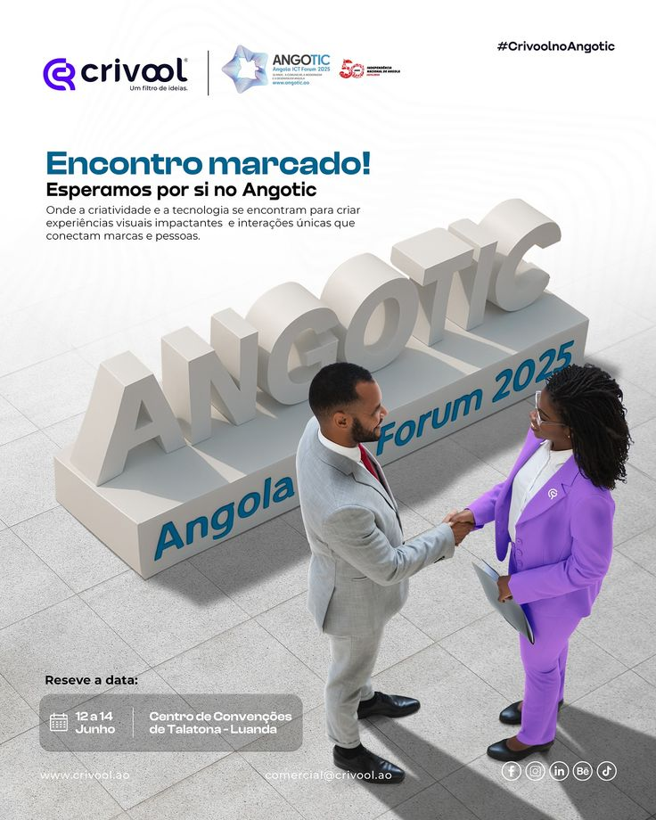

Esta representação visual traduz a alma de Angola através de uma imersão profunda na nossa identidade, destacando a riqueza dos trajes tradicionais, a solenidade das nossas expressões e a vibração única da nossa cultura nacional.
Identidade
Cultura Angolana
A expressão viva de um povo com raízes profundas e futuro vibrante.

Destinos
Turismo em Angola
Natureza intacta, paisagens épicas e hospitalidade genuína.
Angola possui belas paisagens como a Serra da Leba, onde a Engenharia abraça a Natureza numa estrada que venceu mais de 1.000 metros de desnível em 56 curvas inesquecíveis.
Navegação
Explorar Categorias
Clique num cartão para navegar directamente para a secção desejada.
Finanças e Desenvolvimento
Economia de Angola
Da dependência do petróleo à diversificação estratégica.
| Sector | Contributo p/ PIB | Importância Estratégica |
|---|---|---|
| Petróleo | ~45% | Principal fonte de divisas e exportações |
| Agricultura | ~25% | Segurança alimentar e emprego rural |
| Diamantes | ~5% | 3.º maior produtor de diamantes de África |
| Turismo | ~2% | Sector em expansão com grande potencial |
| Indústria | ~8% | Construção, cimento, bebidas e têxtil |
Inovação
Tecnologia em Angola
Da programação às startups, Angola está a construir o seu futuro digital.

A tecnologia em Angola cresce através da programação, das startups e do ensino digital, impulsionada por uma população jovem com grande apetência pela inovação.
Cadeira — Sistemas Operativos
Sistemas Operativos em Angola
Como os Sistemas Operativos impulsionam o desenvolvimento tecnológico angolano.
Um Sistema Operativo (SO) é o software fundamental que gere os recursos de hardware de um computador e fornece serviços comuns para os programas de aplicação. Em Angola, a adopção de diferentes sistemas operativos reflecte o crescimento digital do país.
Microsoft Windows
O sistema mais utilizado em empresas e instituições angolanas. O Windows 10 e 11 dominam o mercado corporativo e educativo.
- Interface gráfica (GUI) intuitiva
- Amplo suporte a software comercial
- Utilizado em escritórios, escolas e governo
Linux
Sistema preferido por programadores, servidores e instituições académicas em Angola, como o ISPI e o ISPTEC.
- Código aberto (open source) e gratuito
- Alta segurança e estabilidade
- Ideal para servidores e desenvolvimento
Android
Com mais de 15 milhões de smartphones em Angola, o Android é o SO dominante no mercado móvel nacional.
- Sistema móvel mais popular em África
- Baseado no núcleo Linux
- Ecossistema de apps em crescimento local
Comparação de Sistemas Operativos
| Característica | Windows | Linux | Android |
|---|---|---|---|
| Tipo | Proprietário | Open Source | Open Source |
| Custo | Pago | Gratuito | Gratuito |
| Plataforma | Desktop/Laptop | Desktop/Servidor | Mobile/Tablet |
| Segurança | Média | Alta | Alta |
| Uso em Angola | Muito alto | Académico/TI | Dominante (mobile) |
Referência W3Schools: Este projecto foi desenvolvido com base em
HTML5, CSS3 e JavaScript — linguagens
fundamentais ensinadas em w3schools.com,
o maior portal de aprendizagem web do mundo, recomendado pelo Professor para esta cadeira.
Multimédia
Vídeo Sobre Angola
Uma janela audiovisual para o coração de Angola.
Se o vídeo não carregar, clique aqui para assistir ao vídeo .
Comunidade
Formulário de Participação
Partilhe a sua categoria favorita e faça parte deste projecto educativo.